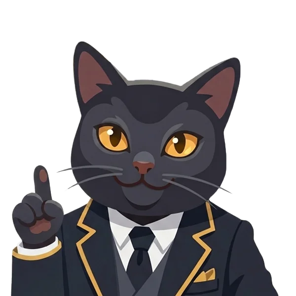

Hoy yo soy el reclutador.
Tu entrevista en inglés, antes de la de verdad
Vesper te entrevista en voz alta para tu puesto. Al final recibes un reporte con las respuestas que te conviene mejorar.
El puesto
Pegar el texto de la vacante (opcional)
Duración
Vesper es una IA. Califica lo que dices, no tu acento, y el nivel que te da es una estimación. Tus respuestas se procesan igual que en el chat con Vesper.
Tus entrevistas
Vesper · reclutador

Déjame revisar mis notas…
Estoy preparando tu reporte.